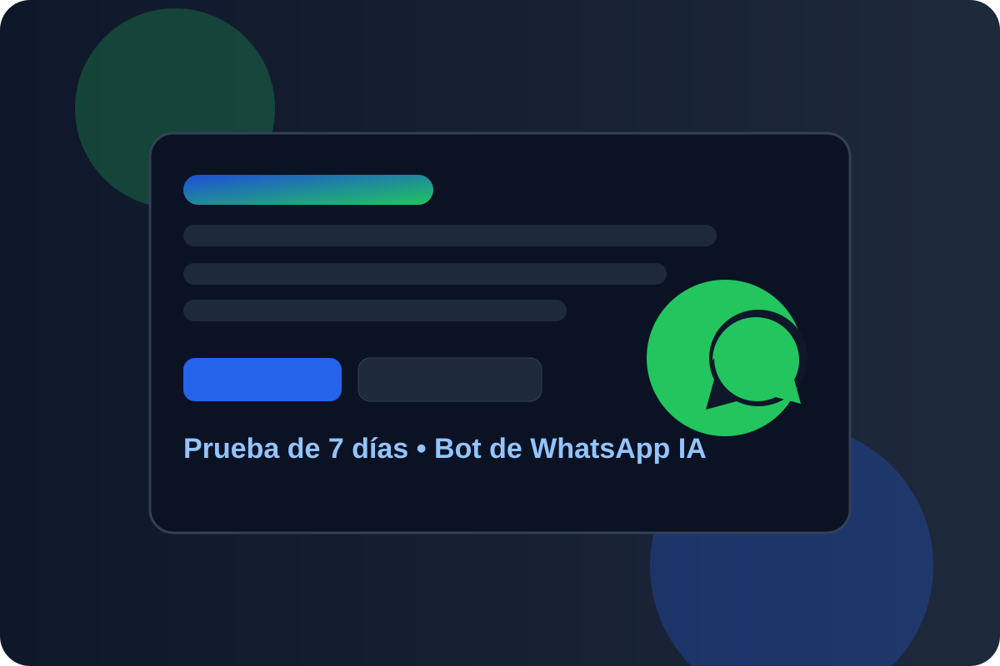
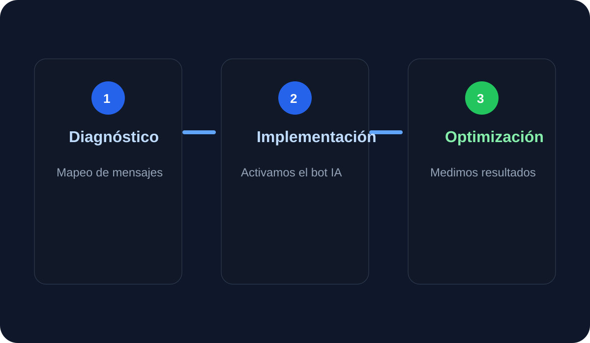

Flujo automatizado inicial
Diseñamos un flujo de conversación inicial adaptado a su negocio para captación y filtrado de prospectos.
Durante 7 días validamos, junto a usted, si el bot responde correctamente, captura leads y acelera su proceso comercial sin fricción para su equipo.

Diseñamos un flujo de conversación inicial adaptado a su negocio para captación y filtrado de prospectos.
Definimos micro-metas claras para evaluar si el bot mejora tiempos y calidad del primer contacto.
Aplicamos buenas prácticas de acceso y operación para que usted tenga control del canal en todo momento.

Le explicamos condiciones y alcance en la llamada estratégica para definir el mejor encaje.
No necesariamente. Revisamos su escenario actual y proponemos la opción más conveniente.
Le mostramos resultados y una ruta recomendada para escalar a implementación completa.
Sí, soporte de acompañamiento durante la ventana de prueba y cierre de hallazgos.
Agende su demo estratégica y activamos su prueba de 7 días con enfoque en resultados medibles.